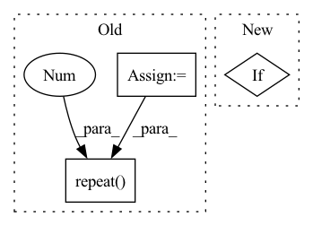

Pattern ID :1934

Before Change
def forward(self, x):
if self.has_mean:
batch_size = x.data.size(0)
x = x - torch.autograd.Variable(self.mean_img.repeat(batch_size, 1, 1, 1))
ind = -2
self.loss = None
After Change
outputs[ind] = x
elif block["type"] == "region":
continue
if self.loss:
self.loss = self.loss + self.models[ind](x)
else:
self.loss = self.models[ind](x)
outputs[ind] = None
In pattern: SUPERPATTERN
Frequency: 3
Non-data size: 3
Instances
Fragment ID: 13434957
Project Name: tianxiaomo/pytorch-yolov4
Commit Name: cf696adb6de3e2a8f68498ff9f2586f2ef62df3a
Time: 2020-04-25
Author: 1025568329@qq.com
File Name: tool/darknet2pytorch.py
M Class Name: Darknet
N Class Name: Darknet
M Method Name: forward(2)
N Method Name: forward(2)
M Parent Class: nn.Module
N Parent Class: nn.Module
M File Name: tool/darknet2pytorch.py
N File Name: tool/darknet2pytorch.py
M Start Line: 101
M End Line: 149
N Start Line: 114
N End Line: 172
'>
Before Change
output_audio, _ = self.RNNs[1](X_audio)
output_visual, _ = self.RNNs[2](X_visual)
batch_size = output_text.size(0)
// (batch, num_directions * hidden_size)
output_text = output_text[:, -1, :]
output_audio = output_audio[:, -1, :]
output_visual = output_visual[:, -1, :]
// (num_classes, 300)
text_emo_vecs = self.textEmoEmbs(torch.LongTensor(list(range(self.num_classes))))
visual_emo_vecs = self.affineVisual(text_emo_vecs)
audio_emo_vecs = self.affineAudio(text_emo_vecs)
text_emo_vecs = text_emo_vecs.unsqueeze(0).repeat(batch_size, 1, 1)
visual_emo_vecs = visual_emo_vecs.unsqueeze(0).repeat(batch_size, 1, 1)
audio_emo_vecs = audio_emo_vecs.unsqueeze(0).repeat(batch_size, 1, 1)
text_attn_feature = self.attention(output_text, text_emo_vecs)
After Change
batch_size = X_text.size(0)
logits = None
if "t" in self.modalities:
output_text, _ = self.RNNs[0](X_text)
output_text = output_text[:, -1, :]
text_emo_vecs_origin = self.textEmoEmbs(torch.LongTensor(list(range(self.num_classes))).to(self.device))
text_emo_vecs = text_emo_vecs_origin.unsqueeze(0).repeat(batch_size, 1, 1)
'>
Fragment ID: 13434959
Project Name: wenliangdai/modality-transferable-mer
Commit Name: b0e565d11d6b3bf9f65fb1dcbdc8c641a2bc8054
Time: 2020-06-10
Author: wenliang.dai.1995@gmail.com
File Name: src/models/temp.py
M Class Name: EmotionEmbAttnModel
N Class Name: EmotionEmbAttnModel
M Method Name: forward(4)
N Method Name: forward(4)
M Parent Class: nn.Module
N Parent Class: nn.Module
M File Name: src/models/temp.py
N File Name: src/models/temp.py
M Start Line: 53
M End Line: 79
N Start Line: 70
N End Line: 96
'>
Before Change
self.sample()
def forward(self, x: torch.FloatTensor) -> torch.FloatTensor:
batch_size = x.shape[0]
return x * self.mask.repeat(batch_size, 1)
def sample(self):
self.mask = torch.bernoulli(
torch.ones(1, self.input_dim, device=self.device) * 1 - self.dropout
After Change
self.mask = None
def forward(self, x: torch.FloatTensor) -> torch.FloatTensor:
if self.mask is None:
raise ValueError("Dropout mask hasn"t been sampled yet. Use .sample().")
return x * self.mask
'>
Fragment ID: 13434960
Project Name: kaleidophon/nlp-uncertainty-zoo
Commit Name: 23e86cca8520591870fae2d45faad6c52fd14599
Time: 2021-06-16
Author: dennis.ulmer@gmx.de
File Name: src/dropout.py
M Class Name: VariationalDropout
N Class Name: VariationalDropout
M Method Name: forward(2)
N Method Name: forward(2)
M Parent Class: nn.Module
N Parent Class: nn.Module
M File Name: src/dropout.py
N File Name: src/dropout.py
M Start Line: 97
M End Line: 99
N Start Line: 96
N End Line: 99